Rows imported from solution_ready_by_special with answer and rationale.
A01-0001A01-Q0002solution_ready
52. Male 87 years old at nursery, presented with severe watery diarrhea 3 days PTA 8-10 times/day, minimal bloody diarrhea last 24 hours, abdominal cramping at lower abdominal pain, history of levofloxacin used 12 days PTA from pneumonia. PE: V/S BT 38.9 HR 115 BP 100/65 RR22 GA: Elderly male HEENT: not pale conjunctiva, anicteric sclera Heart: regular tachycardia, full pulse Lung: Fine crepitation both lower lungs Abd: mild distension, generalized tender at lower abdomen, no guarding, no rebound, hypoactive bowel sound Ext: No pitting edema Neuro: Alert Brown stool Lab: CBC Hct 37.5% WBC 16k PMN 85 L15 Plt256k BUN 32 Cr 1.6 What is the most likely diagnosis? 1. E.coli 2. Amoebic enteritis 3. C.difficile enteritis 4. Salmonella enteritis 5. Shigella dysenteriae
Forceful vomiting followed by chest pain, crepitus, and left pleural findings suggests Boerhaave syndrome; CT chest with oral water-soluble contrast is an appropriate diagnostic study.
A01-0012A01-Q0022solution_ready
54 YOM u/d old stroke, visit ER due to abdominal pain, no fever,no cough. v/s stable Ab: moderate distension,soft,not tender Film as below What is diagnosis
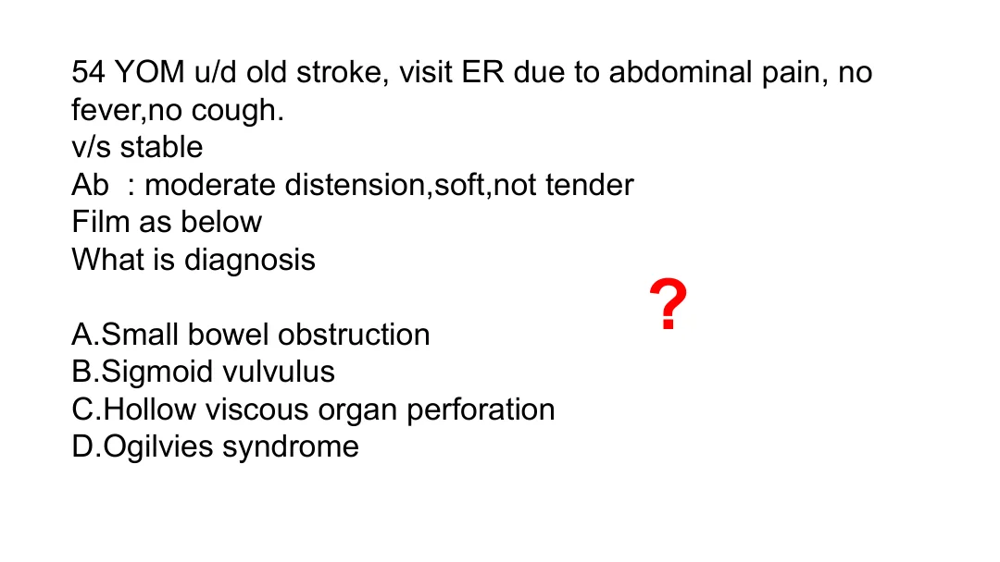
crop
ยังไม่ถูก
A. Small bowel obstruction
ยังไม่ถูก
B. Sigmoid vulvulus
ยังไม่ถูก
C. Hollow viscous organ perforation
ถูกต้อง
Old stroke, abdominal distension, soft nontender abdomen, and colonic dilation pattern fit acute colonic pseudo-obstruction/Ogilvie syndrome.
Old stroke, abdominal distension, soft nontender abdomen, and colonic dilation pattern fit acute colonic pseudo-obstruction/Ogilvie syndrome.
A01-0013A01-Q0026solution_ready
81 YOM u/d DM and chronic alcohol drinking visit ED due to acute abdominal pain radiate to back. He vomited 5 times without diarrhea. v/s stable. Ab: soft, mark tender at epigastrium, no guarding, no rebound Film as below What is the diagnosis
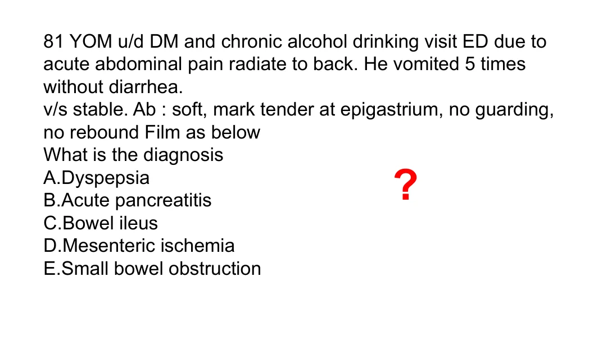
crop
ยังไม่ถูก
A. Dyspepsia
ถูกต้อง
Epigastric pain radiating to the back with vomiting in a chronic alcohol user is classic acute pancreatitis.
GI bleeding and abdominal pain in a patient with prior AAA repair should be evaluated for aortoenteric fistula with CT angiographic/aortic imaging.
A01-0016A01-Q0031solution_ready
20. chronic alcohol อาเจียนหลายครั้ง (ให้ film มา) มี left pleural effusion, skin subcutaneous emphysema, ถาม investigation
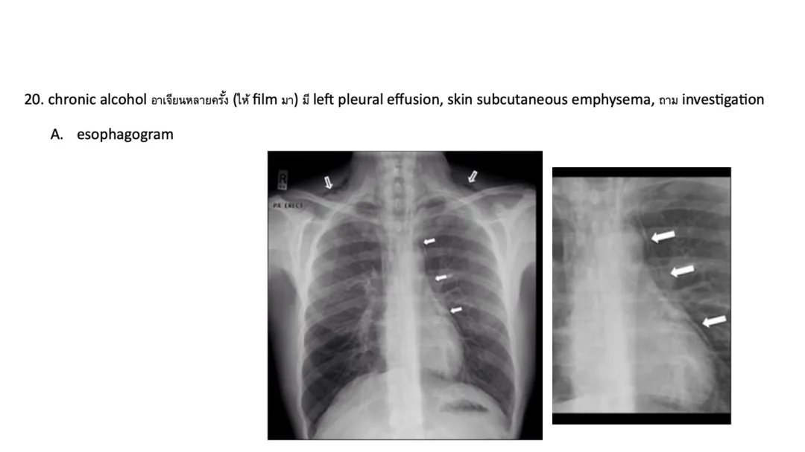
crop
ถูกต้อง
Vomiting followed by left pleural effusion and subcutaneous emphysema suggests Boerhaave syndrome; water-soluble esophagography is a classic diagnostic test.
Vomiting followed by left pleural effusion and subcutaneous emphysema suggests Boerhaave syndrome; water-soluble esophagography is a classic diagnostic test.
A01-0017A01-Q0032solution_ready
45 ปี ชาย เจ็บหน้าอก อาเจียนมาก กลืนอะไรไม่ได้เพราะกลืนแล้วจะเจ็บหมด V/S stable บอกว่า EKG early repolarization (ให้ film ดูเอง) มี subcu emphysema ที่คอเต็มไปหมด แล้วก็มี pleural eff ด้านซ้าย ถาม investigation for dx
crop
ยังไม่ถูก
A. Esophagogram
ยังไม่ถูก
B. echo
ยังไม่ถูก
C. CT whole aorta
ถูกต้อง
Chest pain after vomiting with dysphagia, neck subcutaneous emphysema, and left pleural effusion suggests esophageal rupture; CT chest is the best broad ED diagnostic study among the listed choices.
Chest pain after vomiting with dysphagia, neck subcutaneous emphysema, and left pleural effusion suggests esophageal rupture; CT chest is the best broad ED diagnostic study among the listed choices.
Hematemesis with a 7 cm abdominal aortic aneurysm points to aortoenteric fistula.
A01-0021A01-Q0037solution_ready
40 yr male post radiation therapy, no Hx hemorrhoid, present with LLQ, V/S: BT 38 PR 112 BP stable, Abd: soft, LLQ pain, PR: no hemorrhoid, no anal fissure, ถาม Tx
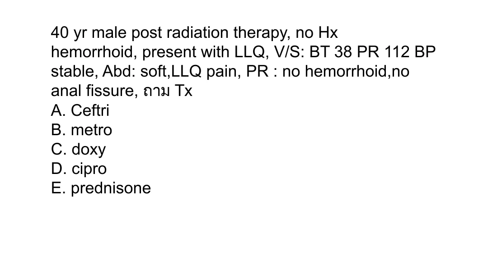
crop
ยังไม่ถูก
A. Ceftri
ยังไม่ถูก
B. metro
ยังไม่ถูก
C. doxy
ยังไม่ถูก
D. cipro
ถูกต้อง
Reviewed duplicate source crops show the complete choices and match the A14 checked item; prednisone is the intended treatment choice for the radiation-associated colitis/proctitis presentation.
Reviewed duplicate source crops show the complete choices and match the A14 checked item; prednisone is the intended treatment choice for the radiation-associated colitis/proctitis presentation.
A01-0022A01-Q0040solution_ready
ชายวัยกลางคน ปวดท้องขวาล่าง VS stable abdomen soft mild tender RLQ no guarding no rebound CTWA: scatter diverticular through colon with pericolic fat stranding ถาม Mx
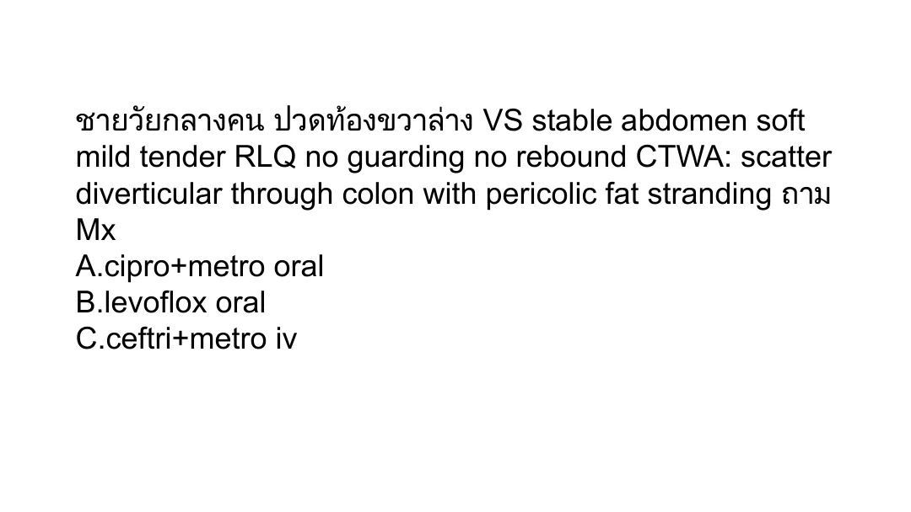
crop
ถูกต้อง
Stable uncomplicated diverticulitis on CT with pericolic fat stranding can be treated as outpatient with oral ciprofloxacin plus metronidazole in this option set.
Stable uncomplicated diverticulitis on CT with pericolic fat stranding can be treated as outpatient with oral ciprofloxacin plus metronidazole in this option set.
A01-0023A01-Q0043solution_ready
You are EP in community hospital, retarded male 24 year, present with chest discomfort 1 week, no other symptoms, physical exam unremarkable, film cxr show 1.5 cm round metallic object in upper esophagus, no sign perforate. What is most appropriate management?
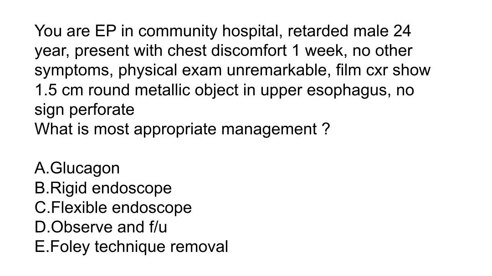
crop
ยังไม่ถูก
A. Glucagon
ยังไม่ถูก
B. Rigid endoscope
ถูกต้อง
An esophageal foreign body present for a week should be removed endoscopically; flexible endoscopy is appropriate when there is no perforation.
An esophageal foreign body present for a week should be removed endoscopically; flexible endoscopy is appropriate when there is no perforation.
A01-0025A01-Q0048solution_ready
Female 63 y present with severe abdominal pain with diarrhea history heart fail + AF. She was shrimp allergy, current medication furosemide + digoxin. V/S: BT 37 PR 100 BP 140/90. Good conscious, abd - generalized tender with guarding, hypoactive bowel sound. Lab -cbc wbc 19000 (NE 78% LY 11%), Plt 200,000. Na 130, k 3 hco3 18. ABG pH 7.27. Film abdomen - adynamic bowel ileus, no free air. What is most appropriate management?
crop
ยังไม่ถูก
A. CT whole abdomen
ถูกต้อง
AF, severe pain, metabolic acidosis, ileus, and guarding suggest acute mesenteric ischemia. If peritonitis/advanced ischemia is emphasized, urgent intervention is needed; if stable diagnosis is emphasized, CTA would be first.
AF, severe pain, metabolic acidosis, ileus, and guarding suggest acute mesenteric ischemia. If peritonitis/advanced ischemia is emphasized, urgent intervention is needed; if stable diagnosis is emphasized, CTA would be first.
A01-0026A01-Q0052solution_ready
35. ชาย heavy alcohol drinking มาด้วยไข้ ปวดท้อง epigastrium V/S BT 38.9 PR 140 BP 90/60 marked tender at epigastrium with voluntary guarding, large bruit at umbilicus ถามจะ investigate อะไร
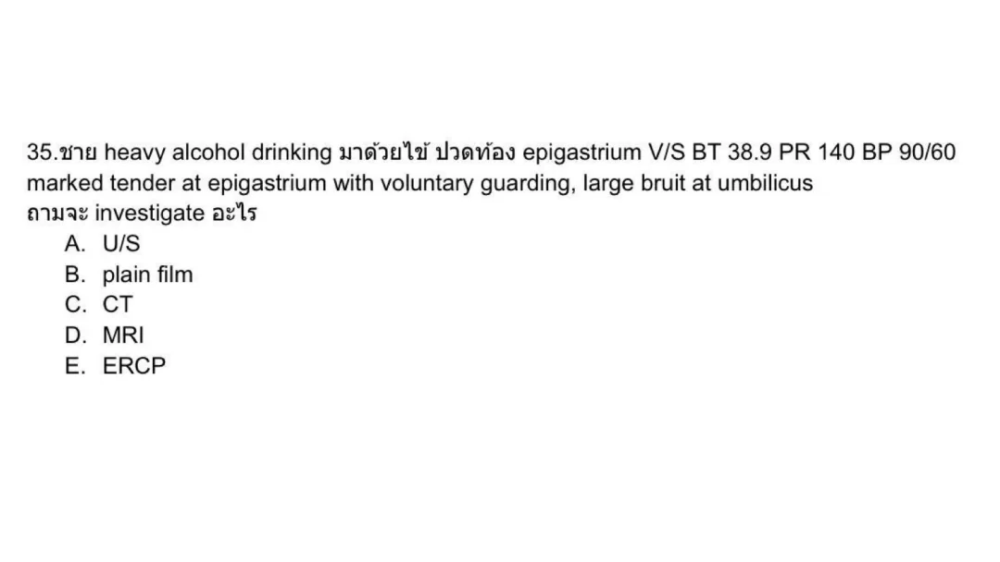
crop
ยังไม่ถูก
A. U/S
ยังไม่ถูก
B. plain film
ถูกต้อง
Severe epigastric pain in heavy alcohol use with shock/fever needs CT to evaluate severe pancreatitis and complications/alternative vascular causes.
AF with severe abdominal pain out of proportion to a soft abdomen is classic acute mesenteric ischemia.
A01-0029A01-Q0057solution_ready
37. ชาย 21 ปี hiv ไม่ได้ on arv มาด้วย bloody diarrhea 1wk มี defecation, tenesmus anoscope: friable mucosa with vesicle with rectal discharge Rxให้ยาอะไร
crop
ถูกต้อง
HIV patient with proctitis/tenesmus and vesicular friable rectal lesions fits HSV proctitis, treated with acyclovir.
Postprandial pain/vomiting with succussion splash indicates retained gastric contents from gastric outlet obstruction.
A01-0034A01-Q0066solution_ready
40. ผู้ป่วยชาย clinical acute cholecystitis มาด้วย RUQ มีไข้ bp drop U/s GB wall 8 mm, positive pericholecystic fluids Lab: leukocytosis (wbc 20,000), organ failure, Cr >2, transminitis, TB,DB ขึ้น ถาม management
crop
ยังไม่ถูก
A. ERCP
ถูกต้อง
Severe acute cholecystitis with organ dysfunction/shock is managed with urgent gallbladder drainage rather than routine early laparoscopic cholecystectomy.
Severe acute cholecystitis with organ dysfunction/shock is managed with urgent gallbladder drainage rather than routine early laparoscopic cholecystectomy.
A01-0036A01-Q0072solution_ready
41. ชาย 50 ปี U/D - HT last night ไป party + drink too much alcohol เช้านี้มี forceful vomiting x 2 ครั้ง + epigastric pain pain score 7/10 PE: V/S - tachycardia, other normal, Abd - marked tender at epigastrium, voluntary guarding Film AAS Most likely diagnosis?
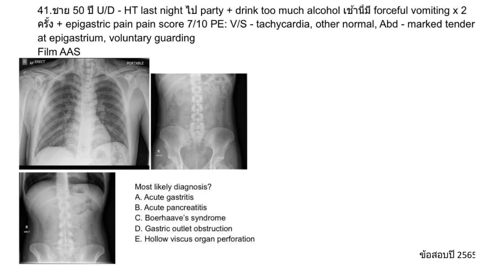
crop
ยังไม่ถูก
A. Acute gastritis
ยังไม่ถูก
B. Acute pancreatitis
ถูกต้อง
Forceful vomiting after alcohol followed by severe epigastric/chest pain is Boerhaave syndrome until proven otherwise.
Solid dysphagia with persistent symptoms despite GERD treatment and positional relief is most compatible with esophageal motility disorder; achalasia is the listed diagnosis.
Solid dysphagia with persistent symptoms despite GERD treatment and positional relief is most compatible with esophageal motility disorder; achalasia is the listed diagnosis.
A01-0041A01-Q0080solution_ready
49. หญิง 20 ปี มาด้วยปวดท้อง + bleeding per vg UPT positive. V/S stable HR108. beta HCG 2500. TAS: no intrauterine pregnant, no adnexal mass, no free fluid. What is next appropriate management?
crop
ถูกต้อง
Stable pregnancy of unknown location with no adnexal mass or free fluid should have close follow-up with repeat beta-hCG in 48 hours when TVUS is not offered.
Stable pregnancy of unknown location with no adnexal mass or free fluid should have close follow-up with repeat beta-hCG in 48 hours when TVUS is not offered.
A01-0042A01-Q0081solution_ready
62. ชาย 35 ปี alcohol use อาเจียน ปวดท้อง RR24 BP 120/80 PR 100 PE: mild generalized tender abdomen, soft, pH 7.30 K 3 Na 140 cl 90 DTX 150 HCO 10 ไม่ได้ให้ lactate ketone มา. Dx?
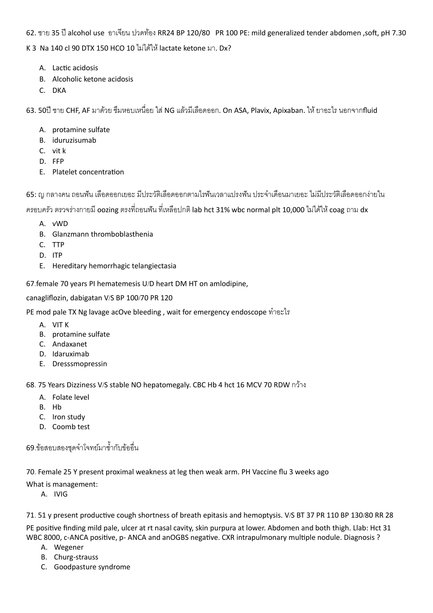
crop
ยังไม่ถูก
A. Lactic acidosis
ถูกต้อง
Alcohol use, vomiting, glucose only 150, high anion-gap metabolic acidosis, and no strong DKA data fit alcoholic ketoacidosis.
Alcohol use, vomiting, glucose only 150, high anion-gap metabolic acidosis, and no strong DKA data fit alcoholic ketoacidosis.
A01-0043A01-Q0082solution_ready
67. female 70 years PI hematemesis U/D heart DM HT on amlodipine, canagliflozin, dabigatan V/S BP 100/70 PR 120 PE mod pale TX Ng lavage active bleeding, wait for emergency endoscope ทำอะไร
crop
ยังไม่ถูก
A. VIT K
ยังไม่ถูก
B. protamine sulfate
ยังไม่ถูก
C. Andaxanet
ถูกต้อง
Dabigatran-associated active upper GI bleeding is reversed with idarucizumab.
Acute GI symptoms followed by descending weakness after food ingestion is botulism.
A01-0045A01-Q0084solution_ready
83. Male 70 years old presented with abdominal pain (ureteric colic). Past history of cholecystectomy and appendectomy. Hx. CAG. This visit presented with similar symptom and told nurse that he wants blood test.
crop
ยังไม่ถูก
A. Factitious
ถูกต้อง
The reviewed source page shows the full option list. A prisoner with recurrent normal workups who specifically requests testing has an external-gain context, supporting malingering over factitious or conversion disorder.
The reviewed source page shows the full option list. A prisoner with recurrent normal workups who specifically requests testing has an external-gain context, supporting malingering over factitious or conversion disorder.
A01-0046A01-Q0085solution_ready
86. Body packer มาด้วย sympathomimetic abdomen tender with guarding managementอะไรต่อ
crop
ถูกต้อง
Body packer with sympathomimetic toxicity plus abdominal tenderness/guarding needs emergency surgical removal/source control.
Mushroom poisoning with rhabdomyolysis/marked CPK elevation points to Tricholoma species toxicity.
A01-0048A01-Q0087solution_ready
ผช 43 ปี presented with abdominal pain from high speed motor vehicle collision with restrained seatbelts. V/S stable, PE abdomen tender at supra-pubic area, no guarding, no rebound, perineal ecchymosis with bleeding per meatus, FAST negative. What is the most appropriate next step for investigation\nA. Cystoscope\nB. Pyelogram\nC. retrograde urethrogram\nD. ultrasound KUB\nE. plain film x-ray KUB
Blood at the meatus and perineal ecchymosis after pelvic trauma require retrograde urethrogram before catheterization.
A01-0049A01-Q0088solution_ready
196.) The patient suspected bowel ischemia who needs to CT whole abdomen for confirming diagnosis. However, A radiologist does not permission due to non-emergency condition Which the interpersonal skill is needed?
crop
ถูกต้อง
When a time-critical study is being refused despite clinical concern, the needed teamwork skill is assertive advocacy for the patient.
Providing scarce blood based on medical need rather than judging the patient for alcohol-related behavior reflects justice/fair allocation.
A01-0052A01-Q0091solution_ready
94. Female pain Lt. arm while swam. Bystander remove something in Lt. arm with twitter pain initial relieve then 20min severe pain at Lt. arm trunk back lower extremity. Vomiting +collasp BP190/140. Which species ?
crop
ถูกต้อง
Severe delayed systemic pain, vomiting/collapse, and marked hypertension after jellyfish sting fits Irukandji syndrome from Carukia species.
Stable pediatric blunt abdominal trauma with abdominal tenderness, pelvic free fluid, and significant hematuria should be evaluated with CT abdomen/pelvis.
The reviewed source page shows the complete options. Recurrent medically unexplained abdominal symptoms with normal exam, labs, and CT after stressor best fit somatizing/somatic-symptom presentation among the choices.
The reviewed source page shows the complete options. Recurrent medically unexplained abdominal symptoms with normal exam, labs, and CT after stressor best fit somatizing/somatic-symptom presentation among the choices.
Opioid withdrawal with vomiting/diarrhea after heroin cessation is treated with opioid agonist therapy when available; methadone is the listed agonist.
Opioid withdrawal with vomiting/diarrhea after heroin cessation is treated with opioid agonist therapy when available; methadone is the listed agonist.
A01-0066A01-Q0105solution_ready
157. หญิง มารพ.ด้วย อาเจียน 2 ชม. หลังจากกินข้าวเที่ยงกับเพื่อน มีอาการเหมือนกัน 3 คน ผู้ป่วยมี slur speech blur vision ปวดท้อง Motor power upper gr III, lower gr II ถาม appropriate Mx
crop
ยังไม่ถูก
A. Neostigmine
ยังไม่ถูก
B. Naloxone
ยังไม่ถูก
C. Flumazenil
ถูกต้อง
Foodborne botulism with cranial symptoms and weakness should receive botulinum antitoxin; the option appears abbreviated as botulinum toxin.
Bactrim exposure with AKI and WBC casts supports acute interstitial nephritis.
A01-0069A01-Q0108solution_ready
Female 40 yr with nausea vomiting and diarrhea 30 minute, she had history of eating mushroom 2 hr ago, physical exam reveal vital sign stable, she was good conscious, diaphoresis, hyperlacrimation, hypersalivation, what is organism\nA. inocybe\nB. psilocybe\nC. chlorophyllum\nD. amanita muscaria\nE. amanita smithiana
TMP-SMX exposure with fever, AKI, and WBC casts is acute interstitial nephritis.
A01-0071A01-Q0110solution_ready
81 YOM u/d DM and chronic alcohol drinking visit ED due to acute abdominal pain radiate to back. He vomited 5 times without diarrhea. v/s stable. Ab: soft, mark tender at epigastrium, no guarding, no rebound. Film as below. What is the diagnosis\nA. Dyspepsia\nB. Acute pancreatitis\nC. Bowel ileus\nD. Mesenteric ischemia\nE. Small bowel obstruction
Duplicate pancreatitis presentation: epigastric pain radiating to the back with vomiting in chronic alcohol use.
A01-0072A01-Q0111solution_ready
25 year female large amount menstruation 6 pads/day, previous normal 2 days, 2 pads/day, UPT negative by herself test, denied active SI, V/S P 115, RR 22, BP normal, Abdomen: soft, tender at lower abdomen, PV normal structure, blood clot in vagina, cervical excitation: normal. US no free fluid in cul de sac. What is the most appropriate management?\nA. Tamoxifen\nB. Progesterone\nC. Vaginal packing\nD. B & C\nE. Oral contraceptive pills
Ginkgo is associated with increased bleeding tendency; hematemesis plus gross hematuria after herbal medicine points to an anticoagulant/antiplatelet herb effect.
Ginkgo is associated with increased bleeding tendency; hematemesis plus gross hematuria after herbal medicine points to an anticoagulant/antiplatelet herb effect.
After descent she is asymptomatic and has sulfa anaphylaxis, making acetazolamide a poor choice; dexamethasone is the alternative medication for altitude illness prevention/treatment in this option set.
After descent she is asymptomatic and has sulfa anaphylaxis, making acetazolamide a poor choice; dexamethasone is the alternative medication for altitude illness prevention/treatment in this option set.
Reviewed duplicate source crops show isolated prolonged aPTT in a hemodialysis patient, which points to heparin effect rather than uremic platelet dysfunction; protamine reverses heparin.
Reviewed duplicate source crops show isolated prolonged aPTT in a hemodialysis patient, which points to heparin effect rather than uremic platelet dysfunction; protamine reverses heparin.
A01-0076A01-Q0115solution_ready
93. A 72-year-old male with advanced liver cirrhosis (MELD score 18) presents with massive hematemesis, hypotension (BP 80/50 mmHg), tachycardia (HR 130 bpm), positive shifting dullness • Labs: o Hemoglobin: 6.8 g/dL o Platelets: 50,000/mm³ o INR: 2.0 o Creatinine: 1.8 mg/dL (baseline 1.0) Despite initial IV fluid resuscitation and transfusion of 2 units of packed red blood cells, he remains hemodynamically unstable and Bleeding continues from NG tube What is the next appropriate sequence of intervention?
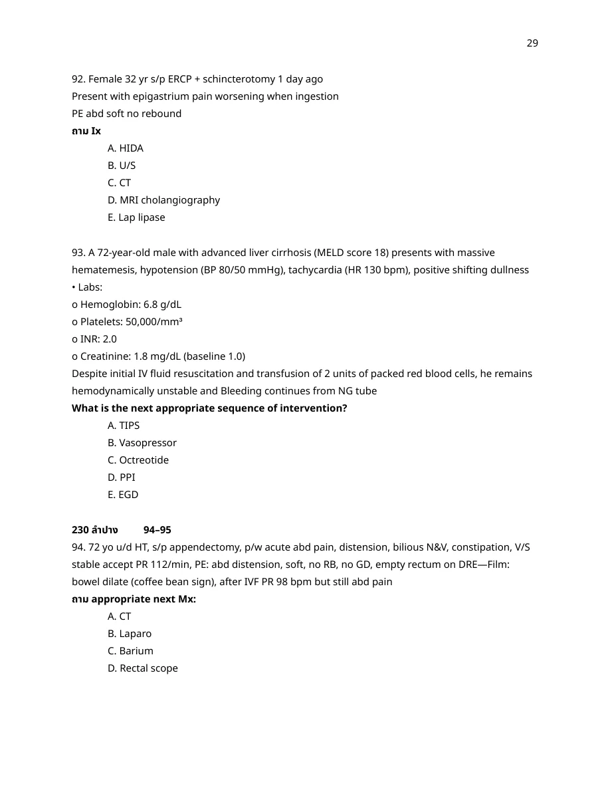
crop
ถูกต้อง
Duplicate variceal bleeding sequence: start vasoactive therapy and urgent endoscopy; TIPS is rescue for refractory bleeding.
ยังไม่ถูก
B. Vasopressor
ถูกต้อง
Duplicate variceal bleeding sequence: start vasoactive therapy and urgent endoscopy; TIPS is rescue for refractory bleeding.
ยังไม่ถูก
D. PPI
ถูกต้อง
Duplicate variceal bleeding sequence: start vasoactive therapy and urgent endoscopy; TIPS is rescue for refractory bleeding.
C. Octreotide, then E. EGD; A. TIPS if uncontrolled
Rationale
Duplicate variceal bleeding sequence: start vasoactive therapy and urgent endoscopy; TIPS is rescue for refractory bleeding.
A01-0077A01-Q0116solution_ready
94. 72 yo u/d HT, s/p appendectomy, p/w acute abd pain, distension, bilious N&V, constipation, V/S stable accept PR 112/min, PE: abd distension, soft, no RB, no GD, empty rectum on DRE—Film: bowel dilate (coffee bean sign), after IVF PR 98 bpm but still abd pain ถาม appropriate next Mx:
crop
ยังไม่ถูก
A. CT
ยังไม่ถูก
B. Laparo
ยังไม่ถูก
C. Barium
ถูกต้อง
Duplicate sigmoid volvulus item; stable patients without peritonitis get endoscopic/rectal-scope decompression.
190. Ped 2ขวบมาวันนี้อาเจียน อ่อนเพลีย ประวัติ 3วันก่อนถ่ายเป็นเลือดตอนนี้หายแล้ว V/S stable A : distension, generalized tender without guarding, film : diffuse bowel dilate with air fluid Dx?
crop
ยังไม่ถูก
A. Pyloric stenosis
ถูกต้อง
A 2-year-old with recent bloody stool and bowel obstruction pattern is most consistent with intussusception.
Raw seafood-associated watery diarrhea in a stable patient suggests Vibrio gastroenteritis; a fluoroquinolone option is reasonable among the listed choices.
A01-0087A01-Q0126solution_ready
75. Female รักษา Cyclophosphamide 1 wk ก่อน, 1 วัน abdominal pain c bloody diarrhea, BT 38.4, PR 80, RR 20, BP stable, Abd mild tenderness, CBC WBC 1200 N40% ถามเชื้อ
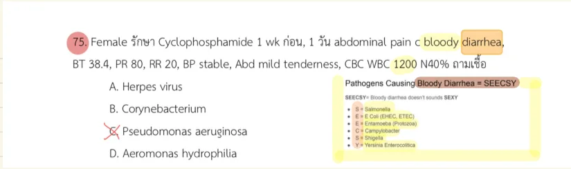
crop
ยังไม่ถูก
A. Herpes virus
ยังไม่ถูก
B. Corynebacterium
ถูกต้อง
Cyclophosphamide-associated neutropenia with fever, abdominal pain, and bloody diarrhea suggests neutropenic enterocolitis/gram-negative infection; Pseudomonas is the best listed organism.
Cyclophosphamide-associated neutropenia with fever, abdominal pain, and bloody diarrhea suggests neutropenic enterocolitis/gram-negative infection; Pseudomonas is the best listed organism.
A01-0088A01-Q0127solution_ready
8. เด็กมีประวัติ bloody diarrhea ต่อมามีอาการทาง neuro anemia creatinine raising ถามเชื้อสาเหตุ a. EHEC b. shigella c. salmonella